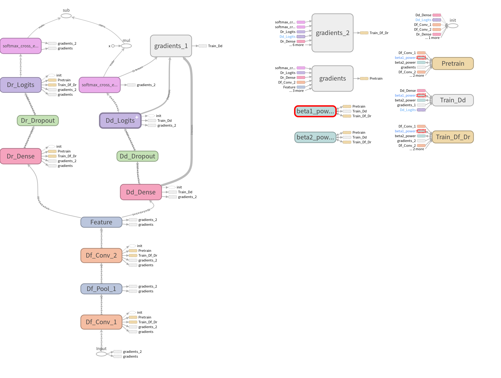

Thu May 23 2018¶
Current Progress: Made a draft of training procedure. Still need to prepare data feeds.
Working Directory: Research/imitate_experiments/001
We made a copy of script01.py to create script02.py and worked on it. This link directs you to the script.
The proposed training procedure is as follow:
- Pretraining. Train Df and Dr, minimizing Lr, where Lr refers to loss of Dr, the performer discriminator
- Fixed Df, and train Dd to minimize Ld, where Ld refers to loss of Dd, the domain discriminator. The goal of this step is to gain a good Dd.
- Fixed Dd, train Df and Dr, minimizing \(L=L_r-\lambda L_d\), where \(\lambda>0\) is a hyperparameter. Thus we are minimizing Lr and maximizing Ld all at the same time. Here the goal is to obtain an envioronment agnostic Df and a good Dr based on it.
- Go back to step 2 and repeat until convergence.
Coding¶
Training procedure draft is in script02.py. It can now be executed (with TensorFlow successfully installed) and produce the following graph in model folder (visualized using TensorBoard):
We can use this graph to verify the whole training procedure is constructed as we expected. We will now briefly discussed how we have coded the training graph. To view this graph on TensorBoard, please check this page for a quick guide.
As mentioned above, one of Df, Dr and Dd will be blocked from updating in the training. In TensorFlow’s language, in some phase of training, trainable variables of some component will not be updated through backpropagation. To realize this effect, we will be utilizing the var_list signature of the method tf.train.Optimizer.minimize. By providing a specific collection of tf.Variable’s to var_list, we are able to force tf.train.Optimizer.minimize to minimize the given loss only by updating those tf.Variable’s and leaving others, i.e. other parts of the model unchanged.
So you will see something like:
# Create an Adam optimizer
adam_op = tf.train.AdamOptimizer()
# Only updating tf.Variable's in update_vars when minimizing loss function Loss
train_op = adam_op.minimize(loss = Loss,var_list = update_vars)
So back to the training procedure proposed in the begining, in pretraining phase and step 3, we only need to update tf.Variable’s in Df and Dr; in step 2, we only need to update tf.Variable’s in Dd. In order to retrieve those tf.Variable’s of each part, we will be using the property tf.layers.Layer.trainable_variables that can give us access to all trainable variables in a particular tf.layers.Layer. Thus in script02.py, we construct layers using API of the class tf.layers.Layer, instead of their corresponding functional forms. For example, we use tf.layers.Conv3D rather than tf.layers.conv3d. You can theck this guide for basic usage of tf.layers.Layer.
So you will see something like:
# List of tf.Variable's that will be passed to var_list
train_vars = []
# A dense layer
dense_layer = tf.layers.Dense(units=10)
# Must first initialize all variables
# Otherwise, dense_layer.trainable_variables will be an empty list
sess = tf.Session()
init = tf.global_variables_initializer()
sess.run(init)
# Add trainable variables to list
train_vars+=dense_layer.trainable_variables
One important thing needs to be notified, that before adding trainable variables to list, we must first initialize all variables by running tf.global_variables_initializer() in a tf.Seesion, as shown above. Otherwise, we would get an empty list, and later no tf.Varialbe will be updated!
With knowledge of above things, we created 3 optimizing operations corresponding 3 training steps, namely pretrain_op for pretraining, dd_train_op for training domain discriminator Dd, and train_op for training environment agnostic feature extractor Df and performer discriminator Dr based on it. After this, we need to run variables initialization tf.global_variables_initializer() again to make things work.
Now we are prepared to run these optimizing operations to train our imitation model by simply calling tf.Session.run method.
Future Works¶
We still need to prepare input data feeds.